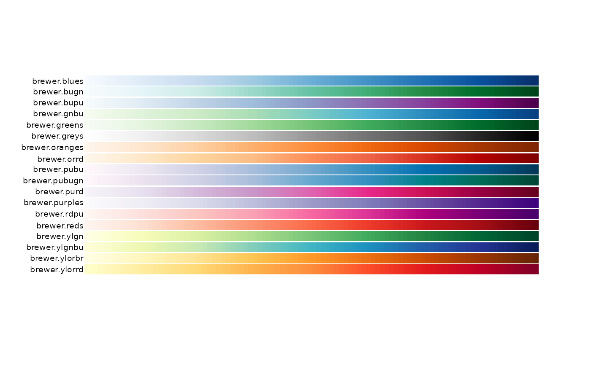
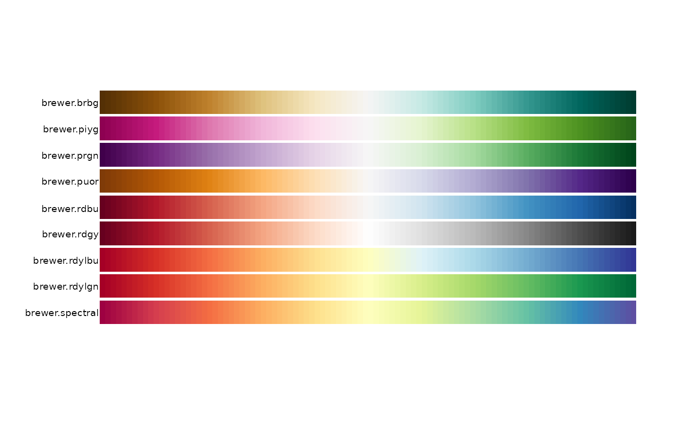
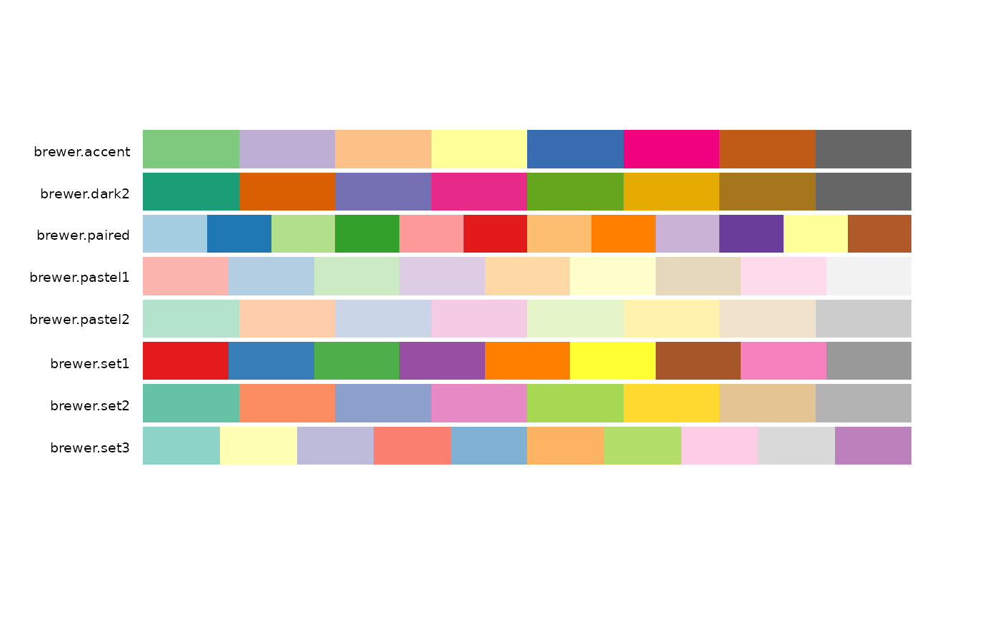

These functions provide a unified access to the ColorBrewer palettes.
Usage
brewer.blues(n)
brewer.bugn(n)
brewer.bupu(n)
brewer.gnbu(n)
brewer.greens(n)
brewer.greys(n)
brewer.oranges(n)
brewer.orrd(n)
brewer.pubu(n)
brewer.pubugn(n)
brewer.purd(n)
brewer.purples(n)
brewer.rdpu(n)
brewer.reds(n)
brewer.ylgn(n)
brewer.ylgnbu(n)
brewer.ylorbr(n)
brewer.ylorrd(n)
brewer.brbg(n)
brewer.piyg(n)
brewer.prgn(n)
brewer.puor(n)
brewer.rdbu(n)
brewer.rdgy(n)
brewer.rdylbu(n)
brewer.rdylgn(n)
brewer.spectral(n)
brewer.accent(n)
brewer.dark2(n)
brewer.paired(n)
brewer.pastel1(n)
brewer.pastel2(n)
brewer.set1(n)
brewer.set2(n)
brewer.set3(n)Examples
# Sequential
pal.bands(brewer.blues, brewer.bugn, brewer.bupu, brewer.gnbu, brewer.greens,
brewer.greys, brewer.oranges, brewer.orrd, brewer.pubu, brewer.pubugn,
brewer.purd, brewer.purples, brewer.rdpu, brewer.reds, brewer.ylgn,
brewer.ylgnbu, brewer.ylorbr, brewer.ylorrd)

# Diverging
pal.bands(brewer.brbg, brewer.piyg, brewer.prgn, brewer.puor, brewer.rdbu,
brewer.rdgy, brewer.rdylbu, brewer.rdylgn, brewer.spectral)

# Qualtitative
pal.bands(brewer.accent(8), brewer.dark2(8), brewer.paired(12), brewer.pastel1(9),
brewer.pastel2(8), brewer.set1(9), brewer.set2(8), brewer.set3(10),
labels=c("brewer.accent", "brewer.dark2", "brewer.paired", "brewer.pastel1",
"brewer.pastel2", "brewer.set1", "brewer.set2", "brewer.set3"))

if (FALSE) { # \dontrun{
# Sequential
pal.test(brewer.blues)
pal.test(brewer.bugn)
pal.test(brewer.bupu)
pal.test(brewer.gnbu)
pal.test(brewer.greens)
pal.test(brewer.greys)
pal.test(brewer.oranges)
pal.test(brewer.orrd)
pal.test(brewer.pubu) # good
pal.test(brewer.pubugn) # good
pal.test(brewer.purd)
pal.test(brewer.purples)
pal.test(brewer.rdpu)
pal.test(brewer.reds)
pal.test(brewer.ylgn)
pal.test(brewer.ylgnbu)
pal.test(brewer.ylorbr)
pal.test(brewer.ylorrd)
# Diverging, max n=11 colors
pal.test(brewer.brbg)
pal.test(brewer.piyg)
pal.test(brewer.prgn)
pal.test(brewer.puor)
pal.test(brewer.rdbu)
pal.test(brewer.rdgy)
pal.test(brewer.rdylbu)
pal.test(brewer.rdylgn)
pal.test(brewer.spectral)
# Qualtitative. These are weird...don't do this
pal.test(brewer.accent)
pal.test(brewer.dark2)
pal.test(brewer.paired)
pal.test(brewer.pastel1)
pal.test(brewer.pastel2)
pal.test(brewer.set1)
pal.test(brewer.set2)
pal.test(brewer.set3)
# Need to move these to 'tests'
pal.bands(brewer.accent(3), brewer.accent(4), brewer.accent(5), brewer.accent(6),
brewer.accent(7), brewer.accent(8), brewer.accent(9), brewer.accent(10),
brewer.accent(11), brewer.accent(12))
#brewer.purd(1) # Should err
#brewer.purd(2) # Should err
brewer.purd(3)
brewer.purd(9)
brewer.purd(25)
pal.bands(brewer.purd(3), brewer.purd(4), brewer.purd(5), brewer.purd(6),
brewer.purd(7), brewer.purd(8), brewer.purd(9), brewer.purd(10),
brewer.purd(11), brewer.purd(12), brewer.purd(13), brewer.purd(14),
brewer.purd(15), brewer.purd(100))
} # }